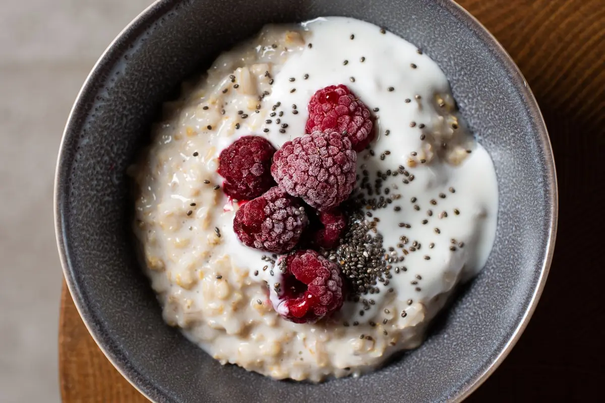

KI-FOTO · PREMIUMEin Foto.
Ein Foto.
Ein guter Anfang.
Foto aufnehmen, Vorschlag prüfen, Mengen anpassen. Du entscheidest, was in dein Tagebuch kommt.

Eine Bowl voller Möglichkeiten.KI-Schätzung · Vor dem Speichern prüfen
Ein bisschen mehr Überblick.
Ein gutes Gefühl für deinen Alltag.
Entdecke Ernährungstracking mit Lookin.

REZEPT-IDEEAvocado, Ei und eine Portion Farbe für deinen Tag.
Deine Einträge. Dein Wochenblick.
Beispielansicht ohne echte Nutzerdaten.

Entdecken. Genießen. Eintragen.
Von der ersten Mahlzeit bis zum Wochenüberblick. Lookin bringt zusammen, was dich in deinem Alltag begleitet.
Foto aufnehmen, Vorschlag prüfen, Mengen anpassen. Du entscheidest, was in dein Tagebuch kommt.
Kalorien, Makros und Mahlzeiten an einem Ort. Übersichtlich statt kompliziert.
Produkte scannen, Lebensmittel suchen oder selbst ergänzen. So passt dein Tagebuch zu deinem Essen.
KI-Unterstützung für Fragen rund ums Essen. Verständlich, direkt und in deiner App.
Wie wäre es mit Beeren-Oats? Haferflocken, Joghurt und frische Beeren – ganz einfach.
Rezepte entdecken, Lieblingsgerichte merken und mit dem kochen, was du zu Hause hast.
In der App entdeckenEin bisschen Farbe für deinen Morgen.
BUNT AUF DEM TELLER02Frisch, bunt und voller Möglichkeiten.
ZEIT ZUM GENIESSEN03Lachs, Reis und eine Portion Grün.
Eine kleine Auswahl aus Lookin. Die vollständigen Rezepte findest du später in der App.
Du brauchst keinen perfekten Plan, um anzufangen. Nur einen ersten Schritt.
Erzähle Lookin, was dir wichtig ist. Die Fragen zu deinem Alltag sind freiwillig.
Suche, Barcode oder Foto: Wähle den Weg, der gerade am besten zu dir passt.
Entdecke deine Mahlzeiten, neue Rezepte und deine Entwicklung an einem Ort.
In der App kannst du deine Daten exportieren, dein Konto löschen und Einwilligungen verwalten. KI-Vorschläge bleiben Schätzungen, die du selbst prüfst.
Mehr zum DatenschutzLookin ist ein Food Tracker für dein Smartphone. Die App verbindet Ernährungstagebuch, Kalorien- und Makroübersicht, Rezeptideen und KI-Unterstützung. Diese Website stellt die App vor.
Die Download-Links für Google Play und den Apple App Store sind noch Platzhalter. Sobald die App im jeweiligen Store veröffentlicht ist, findest du hier die echten Links. Ein Startdatum steht noch nicht fest.
Hier lernst du Lookin kennen. Das Tracking selbst findet in der mobilen App statt. Die interaktive Handyansicht oben ist eine Illustration mit Beispielwerten.
KI-Foto-Erkennung, Lookin Coach und der vollständige Rezeptzugang gehören zum vorgesehenen Premium-Angebot. Die verbindlichen Leistungen, Preise und Abo-Bedingungen siehst du vor einem Kauf in der App und im jeweiligen Store.
Die KI schätzt Lebensmittel, Mengen und Nährwerte. Diese Angaben können falsch sein. Du prüfst und korrigierst sie, bevor du sie in dein Tagebuch übernimmst. Lookin ersetzt keine medizinische oder ernährungsmedizinische Beratung.
Lookin berücksichtigt deine ausgewählten Vorlieben und bietet Rezeptfilter. Der Katalog folgt einer Halal-Inhaltsregel. Bei verpackten Lebensmitteln prüfst du Zutaten und Kennzeichnungen zusätzlich selbst; bei unklaren Zutaten rät die App nicht.
Die Einführungsfragen sind freiwillig. Gesundheitsbezogene Angaben und ihre Verarbeitung hängen von deinen Einwilligungen ab. Mehr dazu steht in der Datenschutzerklärung. Für Minderjährige und bestimmte Gesundheitssituationen werden keine automatischen Kalorienziele berechnet.
Lookin kommt auf dein Smartphone.
Dein Alltag darf sich schon mal freuen.